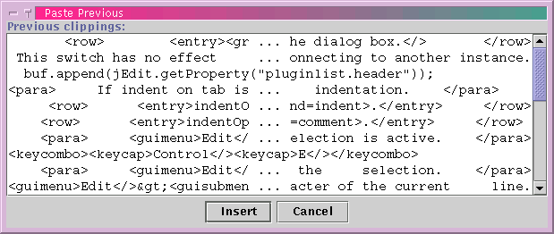

Edit>Cut (keyboard equivalent: Control-X) and Edit>Copy (keyboard equivalent: Control-C) place the selected text in the clipboard. Cut then removes it from the buffer, while Copy leaves it in place.
File>Paste (keyboard equivalent: Control-V) will insert the clipboard contents at the caret position (replacing the selection if there is one). Edit>Paste Previous (keyboard equivalent: F5) will display a dialog box listing the 25 most recently pasted strings. If you want more than 25 strings to be remembered, you can change the number in the General pane of the Utilities>Global Options dialog box.
In the X Window System, there are actually two "clipboards"; the so called "primary selection", and the "Motif clipboard". jEdit only uses the Motif clipboard. However, the XClipboard plugin (see Chapter 8 for information about installing and using plugins) allows read-only access to the primary selection. |
Figure 4-3. The Paste Previous dialog box
